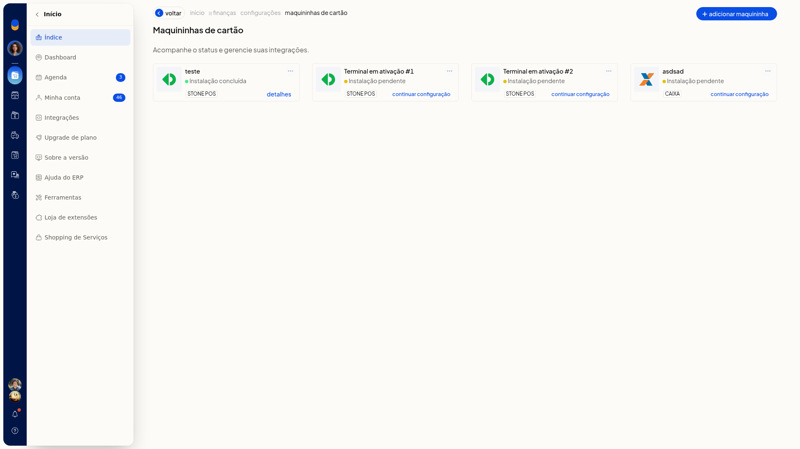
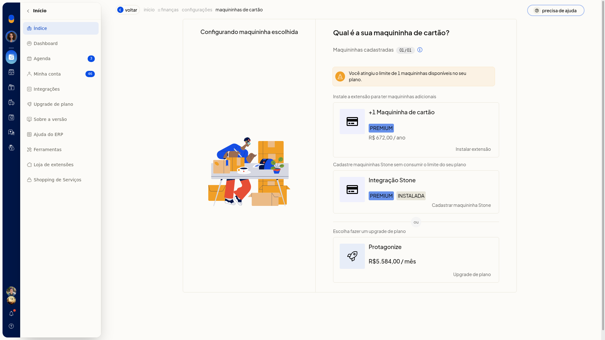
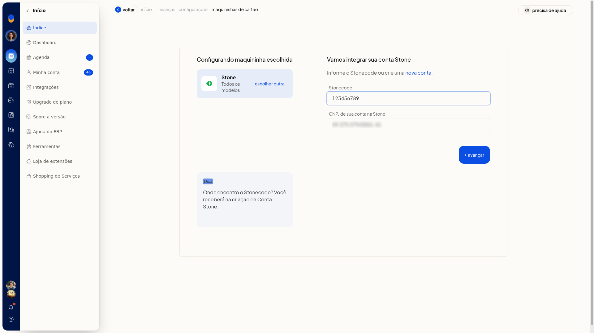
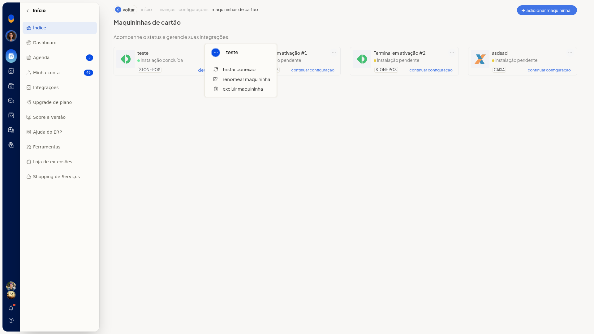
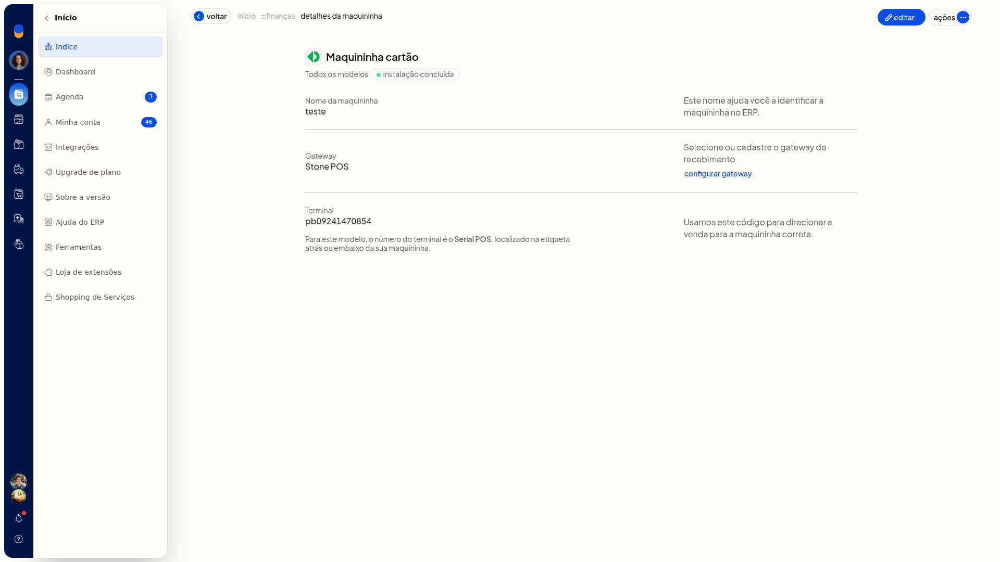
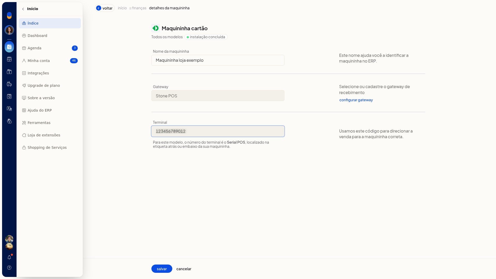

Maquininhas de cartão
Nas configurações de Finanças do ERP da Olist, você acompanha as maquininhas de cartão ligadas ao gateway Stone POS. Dá para cadastrar uma maquininha Stone com o Stonecode, ver a opção de instalação por extensão e ajustar o nome e o terminal de uma máquina já concluída.
A tela fica em Configurações > Configurações ERP > Finanças > Configurações das maquininhas de cartão. No formulário do gateway Stone POS, o link Gerenciar maquininhas cartão abre a mesma lista.
Pré-requisitos
- Para cadastrar a maquininha Stone, tenha o Stonecode recebido na criação da conta Stone e o CNPJ dessa conta.
- Se a opção não aparecer para você, peça acesso ao administrador da conta.
Importante
- Escolher outra volta à mesma tela, com Instalar extensão, Cadastrar maquininha Stone e Upgrade.
- excluir maquininha é uma ação destrutiva. Use só quando quiser remover a máquina.
Instruções
Cadastrar maquininha Stone
-
Acesse Configurações > Configurações ERP > Finanças > Configurações das maquininhas de cartão. Se o gateway Stone POS já estiver aberto, acesse o link Gerenciar maquininhas cartão.


-
Na lista, clique em adicionar maquininha.

-
Clique em Cadastrar maquininha Stone.
-
Informe o Stonecode. A tela indica que ele é obtido na criação da conta Stone. Confira o CNPJ de sua conta na Stone, que pode já vir preenchido.

-
Clique em Avançar para seguir o cadastro.
Editar nome e terminal
-
Na lista, abra o menu da máquina já concluída. As opções são testar conexão, renomear maquininha e excluir maquininha.

-
Abra Detalhes. A tela mostra o status Instalação concluída, o gateway Stone POS, Editar, Ações e Configurar gateway.

-
Clique em Editar.
-
Ajuste Nome da maquininha e Terminal com os dados da máquina. O campo Gateway também aparece nesse formulário.

-
Clique em salvar para gravar o nome e o terminal.
Resultado
A lista pode mostrar máquinas com instalação concluída e máquinas ainda pendentes. Em Detalhes, a maquininha já configurada aparece com o status Instalação concluída e o gateway Stone POS.
Informações adicionais
- Na inclusão, além de Cadastrar maquininha Stone, a tela oferece Instalar extensão e Upgrade.
- No gateway Stone POS, o interruptor Imprimir NFC-e diretamente na máquina POS faz com que as NFC-e da forma Stone(POS) sejam impressas na máquina selecionada.
- Em Detalhes, o link Configurar gateway leva de volta à configuração do gateway da máquina.